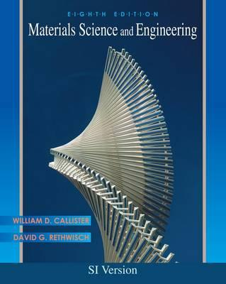

MS4014 Nanomaterials: fundamentals and applications
Reference Books: Nanomaterials: An Introduction to Synthesis, Properties and Applications, Dieter Vollath, Wiley, 2008 (Major reference); Nanostructures and Nanomaterials -Synthesis, Properties and Applications, Cao Guozhong and Wang Ying, World Scientific Publishing, 2nd edition, 2011; Nanoscale Materials in Chemistry, edited by Kenneth J. Klabunde & Ryan M. Richards, John Wiley & Sons, 2nd edition, 2009.

MS7020 Advanced Topics in Polymer Chemistry
Reference Books: Polymer Chemistry, Second Edition, Paul C. Hiemenz andTimothy P. Lodge, CRC, 2007; Principles of Polymer Chemistry, Paul J. Flory, Cornell University Press, 1953.

MS1015 Materials Science (Tutorial)
Reference Books: Materials Science and Engineering, 8th Edition, William D. Callister and David G. Rethwisch, Wiley, 2011.
